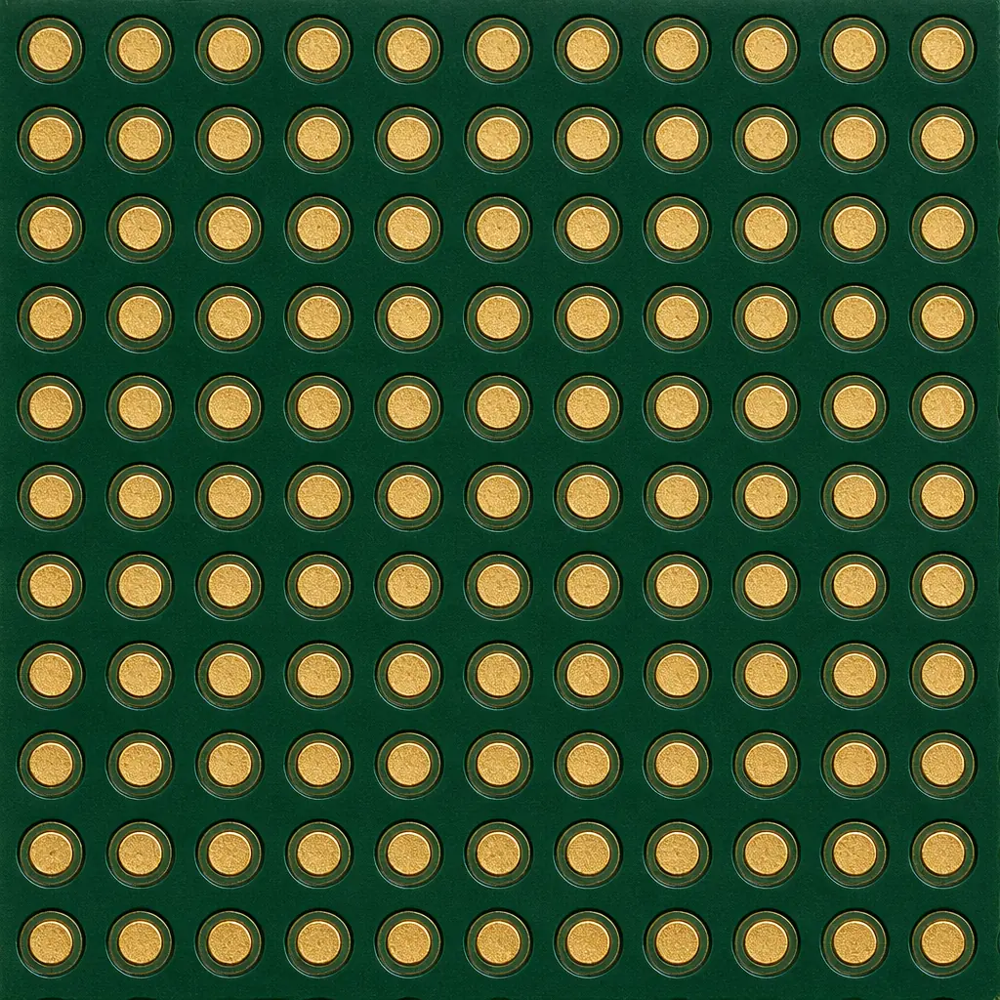
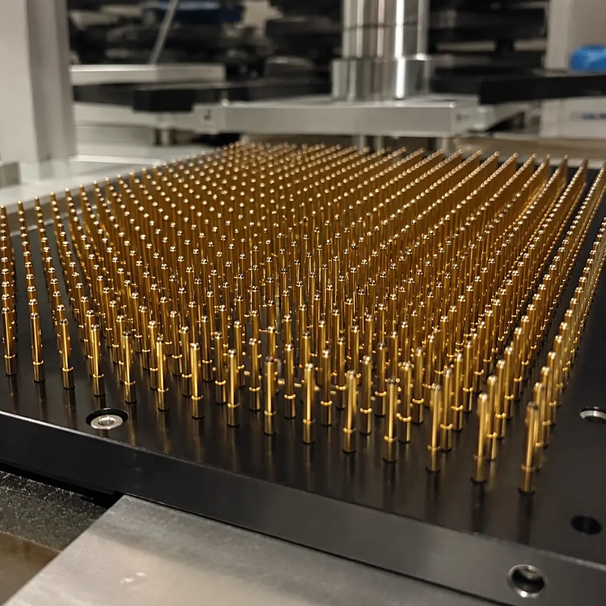

Every PCB that leaves a factory is tested. The question is how thoroughly — and at what cost. A board designed without testability in mind forces the manufacturer into expensive workarounds: custom ICT fixtures that take 4 weeks to build, flying probe programs that run 20 minutes per board, or worst of all, functional test escapes that ship defects to your customer. DFT is not an afterthought you hand off to the test engineer after layout is frozen. It is a set of design decisions made during schematic capture and layout that determine whether your board can be tested efficiently — or at all.
At Huaxing PCBA, our test engineering team processes over 8,000 unique PCB designs per year across 8 SMT lines. The number one recurring issue we see in DFM reviews is insufficient test access — boards where critical nets have no test points, where BGA escape routing blocks probe access, or where JTAG chains are broken by mixed-voltage domains with no level translation. This guide covers the DFT decisions that matter most, organized by test methodology: ICT, flying probe, boundary scan, and functional test.
Why DFT Matters: The Economics of Test Coverage
The cost of finding a defect rises exponentially the further downstream it escapes. A solder bridge caught by AOI costs $0.02 to rework. The same bridge missed by AOI but caught at ICT costs $0.15. If ICT also misses it and functional test catches it, the cost jumps to $5–15. And if it reaches the field? Return costs average $350–1,200 per incident for an industrial PCB, not counting reputational damage. DFT is fundamentally about shifting defect detection as far left as possible.
| Test Stage | Detects | Coverage (Good DFT) | Coverage (Poor DFT) | Cost per Board |
|---|---|---|---|---|
| ICT | Shorts, opens, wrong/missing component, reversed polarity | 85–95% | 50–65% | $0.08–0.25 |
| Boundary Scan (JTAG) | BGA opens/shorts, interconnects between scan-chain devices | 60–80% of digital nets | 0–20% | $0.02–0.05 |
| Functional Test | System-level failures, timing, analog accuracy, firmware bugs | 90–99% | 70–85% | $5–15 |
Factory Reality: Boards designed with proper DFT achieve >98% defect coverage at an average test cost of $0.35/board (ICT + boundary scan). Boards without DFT average $4.20/board — a 12× difference — because they depend almost entirely on expensive functional test. For a 5,000-unit production run, that is a $19,250 penalty for skipping DFT.
Rule 1: Test Point Placement — The 100-Mil Rule and Beyond
Test points are the physical landing pads where ICT fixtures or flying probes make electrical contact. The single most important DFT rule: every net on the board should have at least one accessible test point. Power and ground planes can be probed at their vias, but every signal net, every passive component node, and every IC pin that is not accessible from the bottom side needs a dedicated test pad.
Minimum Test Pad Size: 35 mil (0.89 mm) for ICT, 20 mil (0.5 mm) for Flying Probe
ICT fixtures use spring-loaded pogo pins with 25–50 mil tip diameters. They need a flat, solder-mask-free landing area of at least 35 mil diameter for reliable contact. Flying probe machines can hit smaller targets — down to 12 mil on premium systems — but 20 mil is the practical minimum for consistent first-pass contact. Avoid placing test points on component pads; the solder paste and component body block probe access. Place them on dedicated traces stubbed off the net.
Center-to-Center Spacing: 100 mil (2.54 mm) Minimum
ICT fixture pins are physically large — the spring barrel is typically 50–75 mil in diameter. You cannot pack test points at the same density as 0402 components. The industry standard is 100 mil center-to-center spacing, which allows standard ICT probe heads (75 mil body diameter) without mechanical interference. If you need tighter spacing, 75 mil is possible with micro-probes, but fixture cost increases 40–60% and probe lifetime drops from 500,000 cycles to 150,000.
Keep All Test Points on One Side (Bottom)
Single-sided ICT fixtures cost $2,000–5,000. Double-sided fixtures — needed when test points are scattered across top and bottom — cost $8,000–15,000 and take 5–6 weeks to manufacture. Route all test points to the bottom side during layout. If a net only exists on the top layer, drop a via to bring it to the bottom and place the test pad there. The via itself can serve as a test point if it meets the size and spacing rules.
Test Point to Component Clearance: 50 mil Minimum
ICT fixture probes come down vertically — they need clearance from tall components (capacitors, connectors, inductors) to avoid collisions. Maintain at least 50 mil edge-to-edge between any test pad and a component body taller than 2 mm. For components taller than 5 mm (large electrolytics, relays), increase to 100 mil. The fixture designer will add machined relief pockets for tall parts, but you must give them the space to do it.
Test Point Marking: Solder Mask Opening + Silkscreen ID
Every test point needs a solder mask opening (to expose the copper) and ideally a silkscreen reference designator (TP1, TP2, etc.) matching the schematic. This lets the ICT programmer cross-reference the netlist and fixture pin map. Without silkscreen markings, the fixture builder has to manually probe and beep-test every pad to identify nets — adding 8–12 hours of labor per fixture.

Rule 2: Boundary Scan (JTAG IEEE 1149.1) — Free Test Coverage
Boundary scan is the most underutilized DFT technique in mid-complexity PCB design. If your board has a microprocessor, FPGA, CPLD, or any device with JTAG pins (TDI, TDO, TMS, TCK, and optionally TRST), you already have the hardware for boundary scan testing — you just need to design the scan chain correctly. Boundary scan can test BGA interconnects, SMD opens/shorts, and even verify memory bus connections without a single physical test point. And it adds zero recurring cost: no fixture, no probe wear, just a one-time test program.
Create a Single, Unbroken JTAG Chain
Daisy-chain all JTAG-compatible devices in one scan path: TDO of device 1 → TDI of device 2 → TDO of device 2 → TDI of device 3, and so on. The chain must be contiguous — any break and the entire chain stops working. If you have devices from different voltage domains (1.8V, 3.3V), insert level translators on TDI/TDO between domains. A single broken chain is the most common JTAG DFT failure we see. See our PCB testing methods guide for how ICT and boundary scan complement each other.
Provide Dedicated JTAG Header (Not Just Edge Connector)
A standard 10-pin or 14-pin 0.1" header with TDI, TDO, TMS, TCK, TRST, and ground pins lets the test engineer connect a boundary scan controller in seconds. If your only JTAG access is through a high-density board-to-board connector, you add $500–1,200 in custom fixturing cost and 2–3 weeks lead time for the adapter. A $0.08 header saves all of that. Place it on the board edge with 200 mil clearance for the ribbon cable connector body.
Include Pull-Up/Pull-Down Resistors on TCK, TMS, TRST
JTAG signals must be in a defined state when the tester is not actively driving them. TCK needs a pull-down (10kΩ to GND) to prevent false clocking from noise. TMS and TRST need pull-ups (10kΩ to VCC) to keep the TAP controller in a known state. Missing these resistors = intermittent boundary scan failures that are nearly impossible to debug because they vanish when you connect a scope probe. This is a $0.03 BOM cost that prevents hours of debug.
Procurement Tip: When selecting microcontrollers or FPGAs for a new design, check the BSDL (Boundary Scan Description Language) file availability before committing. Most major vendors provide BSDL files, but some low-cost MCUs with JTAG pins do not implement the full 1149.1 boundary scan register — they use JTAG only for debug/programming. Without a BSDL file, boundary scan testing is not possible regardless of your DFT effort. Cross-check the vendor's BSDL library at design-in, not at test development.
Rule 3: ICT Fixture Design — What the Fixture Builder Needs from You
ICT fixtures are custom mechanical assemblies with hundreds of spring-loaded probes that press against your board's test points simultaneously. A good ICT program catches 85–95% of manufacturing defects in under 30 seconds. But the fixture can only test what it can reach. Every design decision that reduces probe access also reduces test coverage.
Provide Tooling Holes: 3.2 mm Diameter, at Least 3 Places
ICT fixtures align your board using tooling pins that mate with non-plated through-holes in the PCB. You need at least three tooling holes (preferably in corners, outside the board outline if using rails) for stable mechanical registration. Standard diameter: 3.2 mm (0.125"). Tooling holes must be non-plated (NPTH) — plated holes have tolerance variation from the plating process that reduces alignment precision. The fixture can achieve ±2 mil alignment with proper tooling holes; without them, alignment drops to ±8–10 mil and probe contact reliability plummets.
Keep a 100-mil Keep-Out Zone Around Board Edges
ICT fixtures use a vacuum seal gasket around the board perimeter. Any test point or tall component within 100 mil of the board edge interferes with the gasket seal, causing vacuum loss and unreliable probe contact. This is a hard rule — the fixture vendor will ask you to respin the layout if you violate it. For board outlines with irregular shapes, the keep-out zone follows the contour.
Rule 4: Flying Probe vs ICT — When Each Makes Sense
Flying probe testers use 4–8 robotic arms that move probes across the board, making contact with test points sequentially. There is no fixture — the probes navigate programmatically. This eliminates fixture cost and lead time but increases test time per board: 20–120 seconds for flying probe vs 15–30 seconds for ICT. The economic crossover is around 200–500 units for a simple board and 50–100 units for a complex one. If your production volume exceeds these thresholds, the one-time fixture cost (typically $3,000–8,000) is recovered through faster per-board test time within the first production run. Our PCB assembly process guide covers where ICT fits in the full production flow.
At Huaxing PCBA, we operate both ICT and flying probe systems. For prototype and low-volume orders, flying probe provides 85–92% coverage with zero tooling cost and 24-hour turnaround. For production volumes above 500 units, we recommend ICT — the fixture cost is amortized over the run, and the 30-second test time keeps the SMT line moving. Design your board for both: if you follow the DFT rules above, your board is compatible with either test methodology, and you can choose based on volume economics rather than design constraints.

Summary: The DFT Checklist Before Layout Freeze
Before you send Gerber files to your PCB manufacturer, verify these ten DFT requirements. Each one missed is either a direct cost increase or a test coverage gap that ships risk to your customer.
| # | Requirement | Cost if Missed |
|---|---|---|
| 1 | Every signal net has ≥1 test point on bottom side | $3–5/board (functional test instead of ICT) |
| 2 | Test pads ≥35 mil for ICT, ≥20 mil for flying probe | Fixture yield loss 5–8% (re-test cycles) |
| 3 | 100 mil center-to-center test point spacing | Custom micro-probe fixture: +$3,000–5,000 |
| 4 | JTAG chain continuous with level translators for mixed-voltage | Zero boundary scan coverage: +$2–4/board |
| 5 | Dedicated JTAG header with pull-up/pull-down resistors | Custom fixturing: +$500–1,200 |
| 6 | ≥3 tooling holes, 3.2 mm NPTH, in corners | Alignment drift ±10 mil: probe contact failures |
| 7 | 100-mil keep-out zone from board edges | Vacuum seal failure: fixture redesign required |
| 8 | 50 mil clearance from test pad to components >2 mm tall | Probe collision: fixture pocket machining +$800 |
| 9 | Solder mask opening + silkscreen ID on every test point | Manual net identification: +8–12 hours fixture labor |
| 10 | BSDL file availability confirmed for all JTAG devices | Boundary scan not possible: lost coverage |
DFT is not a constraint on creativity — it is a set of mechanical and electrical rules that ensure your design can be verified at production scale. A board designed for testability costs less to manufacture, ships fewer defects, and gives you confidence that every unit leaving the line matches the design intent. At Huaxing PCBA, our DFM review checks all ten DFT rules before fabrication begins — whether you are prototyping 50 boards or ramping to 50,000. Read our guide on signal integrity design rules for the next step after DFT, or contact our engineering team to discuss test strategy for your specific design.